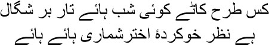

40

How will the dark monsoon nights pass
My eyes are used to counting the stars, alas
 et me tell you a story, my brothers. Bhishma told this tale to Yudhishthira in the Mahabharata. In the forest, a hunter’s poison-tipped arrow missed its target and struck a huge, ancient tree. The tree began to burn at once. All sorts of birds had their nests in its branches. Realizing that the death of the tree was inevitable, the birds began to flee their nests. Only a solitary parrot remained. Meanwhile, the flames rose around the tree, threatening to engulf the parrot. But despite its imminent death, the parrot did not stir from its nest. Indra, the King of the Gods, was astonished to see this from the sky. He asked the parrot, ‘Everyone else has flown off, why are you still waiting? Do you want to be burnt to death in the fire?’
et me tell you a story, my brothers. Bhishma told this tale to Yudhishthira in the Mahabharata. In the forest, a hunter’s poison-tipped arrow missed its target and struck a huge, ancient tree. The tree began to burn at once. All sorts of birds had their nests in its branches. Realizing that the death of the tree was inevitable, the birds began to flee their nests. Only a solitary parrot remained. Meanwhile, the flames rose around the tree, threatening to engulf the parrot. But despite its imminent death, the parrot did not stir from its nest. Indra, the King of the Gods, was astonished to see this from the sky. He asked the parrot, ‘Everyone else has flown off, why are you still waiting? Do you want to be burnt to death in the fire?’
— Lord, I was born in this tree, I grew up among its leaves and boughs. From this ancient tree I have learnt how to be patient and to survive. It is this tree that has sheltered all of us from hail and storms.
— But you will die too, along with the tree.
— So be it, lord.
— Do you not fear death?
— Who doesn’t? Smiling wanly, the parrot said, ‘But lord, can anyone abandon their dharma out of fear of death?’
— What is your dharma?
— If I am alive today it is because of this tree. I cannot abandon it when ill fortune strikes.
— A worthy response. I had indeed expected just such a faithful answer from you, o finest among parrots. What boon do you want?
— Will you fulfil my request?
— But of course.
— Then restore this ancient tree to life.
The tree had regained its life thanks to Indra’s boon. But the ancient tree in which I had been born and grown up had no one to save it, Mirza sahib. The poison-tipped arrow of the Partition burnt it down to cinders. A country was cleaved to create two separate nations on two successive days of death and killing all over Hindustan. Today I do not want to judge who was wrong and who was right—there are political leaders and historians enough for that—but the nightmares haunt me even in my grave. Some say, a million Hindus were killed; others, that a million Muslims died. I tell them, say that two million people lost their lives. Having killed Hindus, the Muslims imagined Hinduism had been eradicated; by murdering Muslims, the Hindus thought they had despatched Islam to its grave. Whom will you explain to, Mirza sahib, that a religion doesn’t die this way? A religion lives in our heart, in our faith. Brothers killed one another over religion, sisters were raped by brothers, refugees from one country flooded another. We had become puppets in the hands of the Nehrus and Jinnahs and Patels. Such hatred, such distrust all around. These leaders were all leeches, my brothers, they deserved to be exterminated in boiling water. They had no other mission besides sucking our blood. No, Mirza sahib, I have no wish to talk about them.
The days were consumed in the kind of blazing conflagration where friends don’t hesitate to kill one another. It was on one of those days that I understood what form the desire for blood can take. Thousands of Hindus and Muslims were dying every day. One day Shyam and I went to meet a Sikh family which had come from Rawalpindi. Shyam was from Rawalpindi, after all. My blood turned cold as I heard how members of their family were killed. Shyam became extremely agitated. I could guess what must have been running through his mind. When we came out, I saw that he was still trembling. I put my hand on his shoulder. Shyam looked at me with unseeing eyes, as though he didn’t even know who I was.
— Shyam …
He was walking along in silence.
— What’s the matter, Shyam?
‘Nothing,’ he answered with a sad smile.
— You’re suffering, aren’t you?
— No.
I heard the sound of his teeth grinding. —I’m a Muslim, Shyam. Tell me the truth, don’t you want to kill me now? I asked him, clutching his shoulder.
Shyam looked at me with cold eyes.
— Tell me the truth, Shyam, don’t you want to kill me?
Shyam spoke deliberately, ‘No, not anymore.’
— What do you mean?
— When I was listening to their stories … how the Muslims killed us … yes, at that time … I could really have killed you then, Manto.
Shyam gripped my arm and began to weep. ‘Forgive me, Manto.’
This was not just the Partition of India, not just Hindustan ki taksim, this was also a partition of friendship. All this killing and plundering—headless corpses swimming in a sea of blood—even children had been tossed on the streets with their legs ripped off—flies buzzing around the mouths of serially raped women—as I walked down the streets, I wondered, all this cold meat, this thanda gosht, everywhere, ya Allah, was I even alive?
Yes, I was alive all right, I was alive just as Ishwar Singh was alive. The universe was burning, I was burning. I cannot even imagine how Ishwar Singh survived, Mirza sahib. I had promised long ago to tell you the story of ‘Thanda Gosht’, my brothers.
It all happened on a midnight. A midnight in Ishwar Singh’s life, and in our lives too, we who had lived in a country named India, but who had known that we would have to split our hearts right down the middle into two. That night Kulwant Kaur got off her bed when she saw Ishwar Singh enter the room. Looking at him with pointed eyes, Kulwant shut the door. Going back to her bed, she saw Ishwar Singh rooted to the spot, perplexed, as though confronted with a problem he simply couldn’t solve. He stood in a corner of the room with his kirpan in his hand, looking at the floor. His turban had come loose. Kulwant noticed that the hand in which he held his kirpan was trembling.
After a long silence, when she was no longer able to bear the stillness, Kulwant called out to him, ‘Ishwar saiyan.’
Ishwar glanced at her for a moment before looking away.
— Where have you been these past few days, what have you been doing? Kulwant screamed.
— I don’t know.
— Is that an answer!
Flinging his kirpan away, Ishwar Singh threw himself on the bed. He looked as though he had been sick for several days. Putting her hand on his forehead, Kulwant asked, ‘What is it, jaani?’
Ishwar Singh had been staring at the ceiling. Now he looked at Kulwant and sobbed, ‘Kulwant.’
— Tell me, jaani.
Taking his turban off, Ishwar Singh looked at Kulwant again. His eyes sought sanctuary. Then a groan escaped his lips. ‘I’ll go mad, Kulwant,’ he said.
Running her hand through his hair, Kulwant asked, ‘Tell me where you’ve been all this time.’
Clenching his teeth, Ishwar Singh said, ‘Motherfucker, in bed with my enemy’s mother.’ Suddenly putting his arms around Kulwant, he began to laugh as he kneaded her breasts, ‘I swear on the saint, kasam guru wahe ki, I haven’t seen another woman like you, Kulwant.’
Lowering his hands from her breasts, Kulwant said, ‘Swear on me and tell me the truth, where were you? Were you in town?’
— No.
— Something tells me you were. You’ve robbed a lot of money and now want to hide here, don’t you?
— I am not my father’s son if I lie to you.
Kulwant looked at him for some time. Then she flared up, ‘I still don’t know what happened to you the other night. You lay down beside me, you gave me all that stolen jewellery, you told me so many things between kisses. Then something went wrong suddenly. You dressed and left without a word. What? What was it?’
Ishwar Singh looked as though someone had drained all the blood from his face.
— Something’s going on with you Ishwar saiyan. You’re hiding it from me.
— Nothing like that, Kulwant. I swear on you.
— But you’re not the man who was here eight days ago. Why? What have you done, tell me.
Without replying, Ishwar Singh clasped Kulwant in his arms, raining kisses on her madly. ‘I’m the same Ishwar saiyan, jaani.’
— Tell me the truth, what happened that night?
— That fucking motherfucker’s mother …
— So you won’t tell me.
— What should I tell you? What?
— If you lie you’ll cremate me with your hands, saiyan.
Ishwar Singh held Kulwant even more tightly, kissing her neck. Kulwant laughed, so did Ishwar Singh. Taking off his shirt, he said, ‘Come, let’s play cards.’
Kulwant pretended anger. ‘Go to hell.’
Ishwar Singh began sucking on Kulwant’s lips. She couldn’t prevent him anymore. Ishwar Singh shouted, ‘Now for the bloody ace.’ Disrobing Kulwant, he ran his tongue all over her body.
‘You’re an animal,’ cried Kulwant.
— Of course I am.
He nibbled on Kulwant’s lips and earlobes, pressed and sucked her breasts, rubbed his face on her stomach. Kulwant’s body was on fire too. But Ishwar Singh realized that in spite of all this he wasn’t aroused. Eventually Kulwant groaned, ‘Enough of shuffling the pack, Ishwar saiyan. Where’s your ace?’
No, he didn’t have the ace up his sleeve today. Exhausted and disappointed, Ishwar Singh lay down, covering his face. Now Kulwant continued with her attempts to arouse him in different ways. Eventually she shouted in disgust, ‘What witch have you been sleeping with all these days, Ishwar saiyan? She’s turned you into pulp.’
Ishwar Singh panted. Kulwant shouted louder, ‘Tell me who the witch is—what’s her name …’
— No one, Kulwant. I have no one else in my life.
— I have to know the truth today. Swear on wahe guru and tell me who the whore is. Don’t forget I’m Sardar Nihal Singh’s daughter. If you lie to me I’ll make mincemeat of you. Now tell me who the whore is.
Ishwar Singh only kept shaking his head. Kulwant was insane with rage. Picking up the kirpan from the floor, she pounced on Ishwar Singh. His cheek began to bleed. Shaking him by his hair, Kulwant let loose a torrent of abuse. ‘Stop, Kulwant,’ said Ishwar Singh coolly.
— Not before you tell me who the bitch is.
Blood was flowing down Ishwar Singh’s face. He tasted his own blood with this tongue. A chill ran down his spine. Like a drunken man, he said, ‘What shall I tell you, Kulwant? I have finished off six people with this kirpan.’
— I’m asking again who the bitch is.
— Don’t call her a bitch. Ishwar Singh spoke hoarsely.
— Meaning? Who is she?
— I’ll tell you. Wiping his face, he looked at his blood-soaked hand. Then he muttered, ‘All of us are fucking … we’re all motherfuckers.’
— Come to the point, Ishwar saiyan. Kulwant screamed.
— Wait. I’ll tell you everything. But you have to give me time, Kulwant. Not everything can be said so easily. Human beings … you see, Kulwant … as I said … motherfuckers … human beings are the only motherfuckers. There was looting all over town, I joined the mob too. All the money and jewellery that I got, I handed over to you. But there was just the one thing I didn’t tell you, Kulwant, that I couldn’t tell you.
— What was it?
— We broke through the door of a house … yes, seven … there were seven people in the house … I killed six of them myself with this kirpan … never mind … never mind all this, Kulwant … there was a girl, you know … she was so beautiful … I could have sliced her up like the rest … but I thought … Ishwar Singh laughed. ‘She was so beautiful, jaani, I can’t tell you how beautiful. I thought, I have Kulwant every day, let me have someone new today.’
— I knew it. Kulwant’s piercing look held both hatred and contempt.
— I slung her over my shoulder and went out.
— And then?
— On the way … Ishwar Singh was silent for a few moments
— Where was I? She was slung over my shoulder … we came across a canal, there was this dense undergrowth on its banks. I laid her down amidst the bushes. At first I had thought of shuffling the cards for a while. But I didn’t know whether anyone was lurking nearby. So straight to the ace …
— Go on … go on …
— I dealt the ace.
— And then …
For a long time, Ishwar Singh sat with his head bowed. Then he looked at Kulwant as though he had woken up after a very long sleep. —The girl had died … I don’t know when she died … she was just a lump of cold flesh. Thanda gosht. Jaani … your hand … jaani …
Touching Ishwar Singh, Kulwant found his body colder than ice.
Yes, Mirza sahib, we seemed to be walking through an ice age. How many people were murdered? How many women were raped? How many people became refugees? I don’t know the numbers, my brothers. And what would I do with them anyway? I saw a child who had forgotten how to speak. Everyone in his family had been chopped up and shot dead before his eyes. When others spoke of the numbers, I would see the child’s face—the empty look in his eyes, mute. A wet rag had wiped out all his memories with a single swipe.
It was obvious that I would now have to wipe Bombay out of my memories too. Shafia and our children had gone off to Lahore much earlier. She kept writing, asking me to join them in Lahore. Bombay was my second birthplace; how could I leave the city? I worked at Bombay Talkies at the time. Ashok Kumar the hero and Savak Vacha were the owners. Muslims were in important positions, because of which the antipathy of the Hindus was mounting by the day. Bombay Talkies received several letters threatening to kill Vacha sahib and torch the studio. I didn’t care for the atmosphere of suspicion and violence anymore. I was drinking more and more. Many of the Hindu employees felt that Muslims were ruling the roost at Bombay Talkies because of me. Shahid, Ismat, Kamal Amrohi, Hasrat Lakhnavi, Nazir Azmiri, Ghulam Haider, me … we were all at Bombay Talkies then.
One day I told Ashok, ‘Sack me now, dadamoni.’
— What do you mean?
— I don’t want Bombay Talkies to be destroyed because of me.
— You’ve gone mad, Manto. Have patience. It’ll sort itself out eventually.
But the insanity increased. Arson and looting everywhere, murders on the streets. One day Ashok and I were on our way back home from Bombay Talkies. When we reached his house, I wondered how I’d get to mine. ‘Let me drop you, Manto,’ said Ashok. ‘We’ll see what happens.’
To take a short cut, Ashok drove through Muslim slums. A wedding procession was approaching. ‘Why have you taken this route, dadamoni?’ I asked, gripping his hand.
— Be quiet. There’s nothing to worry about.
I really was very frightened. Was there anyone who didn’t know Ashok? Killing a famous Hindu like him would sanctify their weapon. When his car went up to the procession, there was a cry, ‘Ashok Kumar, Ashok Kumar!’ My blood ran cold. But Ashok was unaffected. I was about to poke my head out through the window and declare, ‘I’m a Muslim. Ashok is taking me home.’ Before I could, two young men came up to the window and said, ‘The road ahead is blocked, Ashok bhai. Take the lane to the left.’
We traversed the route safely. ‘You were worrying unnecessarily, Manto,’ Ashok said with a smile. ‘They love artistes.’
Really? I have no idea. Does art hold any value for those who riot and flood the streets with blood? Walking the streets of Lahore one day, Kabir saw a shopkeeper making packets with pages torn from a book of Surdas’s poetry. He could not hold back his tears. ‘What have you done?’ he asked the shopkeeper.
— Why, what’s the matter?
— Can’t you see that this is a book of Surdas’s poetry? How can you use its pages for your packets?
— Surdas? The shopkeeper laughed. —No one named Surdas can be a devotee.
— Why not?
— What does ‘sur’ mean?
— It means melody. Even God’s name …
— Don’t you know ‘sur’ means ‘suar’, a pig? The shopkeeper began to laugh.
— So that’s what it means for you?
Another day, Kabir saw that some people had smeared the Goddess Lakshmi’s idol with straw. He began to clean the idol. A group of people turned up and asked, ‘What do you think you’re doing?’
— What do you mean?
— Don’t you know idol worship is forbidden by our religion?
— No religion demands that a beautiful idol be soiled.
The people began to laugh at what Kabir had said. He wandered about the lanes and bylanes of Lahore, weeping. Are you surprised, my brothers? How could Kabir have visited Lahore? I wrote a story about him. ‘Dekh Kabira Roye’—‘See, Kabir Weeps’. Kabir could have gone wherever he pleased; if Mirza sahib could have met him at the Manikarnika Ghat, why should he not have walked the streets of Lahore?
Eventually it was Lahore that I had to return to. In January 1948, I packed all my belongings and boarded the ship from Bombay to Karachi. Perhaps I was afraid. I’m a coward, after all. I’d told Ismat, come to Lahore with me, all the Hindus there are coming over to India, you’ll find a house. Come along, Ismat, let’s start afresh in Lahore.
Ismat didn’t agree. She only asked, ‘You’ll abandon us just to save your skin?’
— I am an outsider in this country, Ismat.
— Who told you that?
— I know.
— No you don’t. You’re a coward. That’s why you’re running away.
I realized from Ismat’s eyes, Mirza sahib, that she began to hate me from that day onwards. But did that mean not writing me a single letter? Or not even answering any of mine? Does hatred erase all memories? Perhaps. Or else how could the hatred during the riots have erased so many centuries of memories?